이 종합 Chopping(나무 베기) 빌드 가이드를 통해 장비·카드·연금술 등 모든 효율 원천을 최적화하여 로그, 잎 등 필요한 목재 자원을 효과적으로 획득하세요. 이 페이지는 World 3까지의 핵심 부스트에 집중하며, 신규 및 중급 Idleon 플레이어를 위한 Chopping 효율의 기본 이해를 제공합니다. 그 이후 단계의 획득량은 Idleon 위키에 정리된 다양한 일반 스킬 효율 보너스를 통해 자연스럽게 증가합니다.
Chopping 빌드 탤런트 (Mage, Shaman, Wizard)
Mage 탤런트는 Chopping 빌드의 핵심이며, 아래 우선순위로 투자하세요.
| 탤런트 | 효과 | 비고 |
|---|---|---|
 Smart Efficiency Smart Efficiency | 스킬 효율 증가 | Chopping 효율을 큰 폭으로 높여주는 1순위 스킬 |
| Active AFK'er | 스킬링 AFK(방치) 획득량 증가 | AFK 중 로그 획득량과 경험치를 높여줌 |
 Log On Logs Log On Logs | 나무에서 로그 드롭량 % 증가 | 공격 바에 배치해야 발동됨. 로그 획득에 눈에 띄는 효과 |
 Leaf Thief Leaf Thief | 보관함의 풀잎(Grass Leaves) 10의 거듭제곱마다 Chopping 효율 % 증가 | W1 나무에서 풀잎을 파밍해 최대한 쌓을수록 효율이 오름 |
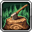 Deforesting All Doubt | WIS(지혜)가 Chopping 효율에 미치는 효과 % 증가 | 지혜 스탯 상승분을 강력한 효율 수치로 전환시켜줌 |
| Mana Overdrive | 최대 MP % 증가 | World 2에서 해금되는 연금술 버블이 MP를 Chopping 효율로 전환 |
| Mana Booster | MP 고정 증가 | 위와 동일한 원리로 활용됨 |
| Inner Peace | Chopping 경험치 획득량 증가 | 레벨업으로 더 강한 도끼 장착 가능 |
| Individual Insight | WIS 증가 | WIS를 통한 소폭 Chopping 향상 |
| Book of the Wise | WIS 증가 | 위와 동일 |
Shaman 또는 Wizard의 탭 3 스킬 우선순위:
| 탤런트 | 효과 | 비고 |
|---|---|---|
| Stupendous/Staring Statues | 조각상 효과 증가 | Chopping 파워를 제공하는 나무 조각상의 효과를 높여줌 |
| WIS Wumbo | WIS 증가 | 추가 WIS 원천 |
| Occult Obols | Obols에서 얻는 WIS 증가 | 일반적으로 WIS 획득량이 작아 우선순위 낮음 |
특수 탤런트 우선순위:
| 탤런트 | 효과 | 비고 |
|---|---|---|
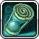 Tick Tock | 전투 및 스킬링 AFK 획득량 증가 | 초반에 다른 방법으로 얻기 어려운 AFK 획득량에 크게 기여 |
 Supersource Supersource | 모든 스킬의 기본 효율 증가 | Party Dungeons에서 획득. 기본 효율에 고정 수치 추가 후 % 효율 배율도 받아 지속적으로 가치 있음 |
| Action Frenzy | 모든 스킬 속도 증가 | Party Dungeons에서 획득. 스킬 속도 향상으로 자원·카드 파밍에 유리 |
 Frothy Malk Frothy Malk | 부스트 음식 보너스 증가 | Chopping 속도를 늘리는 부스트 음식(Saucy Logs)의 효과 강화 |
 Toilet Paper Postage Toilet Paper Postage | 스킬 효율 부여 우표 보너스 증가 | 우표 레벨이 높아질수록 눈에 띄는 효과; 초반에는 미미함 |
 Rando Event Looty Rando Event Looty | AFK 획득률 증가 | 랜덤 이벤트 전리품 운에 따라 소폭 향상 |
 Dummy Thicc Stats Dummy Thicc Stats | 전체 스탯 % 증가 | WIS가 Chopping 효율을 높이므로 계정 성장에 따라 점점 강력해짐 |
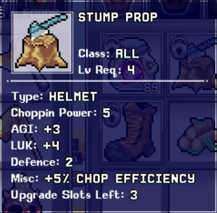
Chopping 장비
항상 제작 가능한 최상위 도끼를 장착하고, 아래 장비를 추가하여 장비 최적화를 진행하세요.
| 장비 (슬롯) | 효과 | 비고 |
|---|---|---|
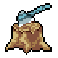 Stump Prop (투구) | Chopping 효율 5%, Chopping 파워 +5 | Woodsman (W1 Spore Meadows) 퀘스트 라인 |
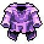 Furled Robes (상의) | Chopping 효율 10% | 모루 제작 |
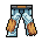 Bleached Designer Wode Patch Pants (바지) | Chopping 효율 5% | 모루 제작 (레시피는 Wode Board 드롭) |
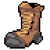 Logger Heels (신발) | Chopping 효율 20% | 모루 제작; Fiberous Footings(35%)로 업그레이드 가능 |
| Persephones Bouquet (펜던트) | 스킬 AFK 획득량 15% | Party Dungeons |
 Serrated Rex Ring (반지) Serrated Rex Ring (반지) | 스킬 효율 8% | Party Dungeons → Baba Yaga 드롭 업그레이드 |
 Gilded Efaunt Dislodged Tusks (망토) Gilded Efaunt Dislodged Tusks (망토) | 스킬 효율 10% | Gilded Efaunt (W2 나이트메어 보스) |
| Blunder Hero (트로피) | 스킬 AFK 획득량 3% | Scripticus (W1 마을) 퀘스트 라인 |
 King of Food (트로피) King of Food (트로피) | 음식 효과 20% | Picnic Stowaway (W1 Froggy Fields) 퀘스트 라인 |
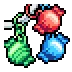 Time Candy Keychain (열쇠고리) | 모든 AFK 획득량 2~5% | Party Dungeons 티어 3 열쇠고리 |
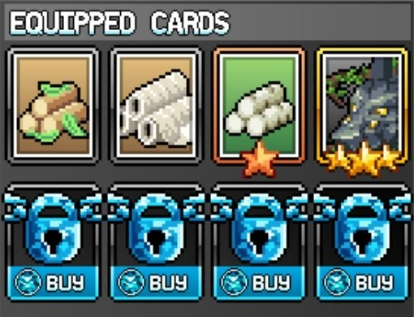
Chopping 카드
로그 카드들은 효율·속도·AFK 획득량을 제공하며, Easy Resources 카드 세트와 함께 사용합니다. World 3까지 활용 가능한 주요 카드는 아래와 같으며, 남은 슬롯에는 Chopping 경험치·WIS·MP 카드를 채우세요.
| 카드 | 효과 |
|---|---|
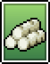 Bleach Logs | 총 Chopping 효율 % |
| Tropilogs | Chopping AFK 획득량 % |
| Potty Rolls | Chopping 속도 % |
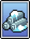 Tundra Logs | Chopping AFK 획득량 % |
| Wispy Lumber | Chopping 속도 % |
| Bunny | 스킬 AFK 획득률 % |
 Amarok Amarok | 스킬 AFK 획득률 % |
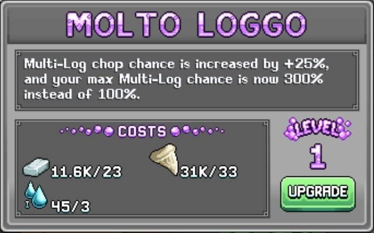
Chopping 연금술
마지막 핵심 요소는 연금술 버블 중 High-IQ 가마솥(보라색)입니다. 처음에는 작은 수치지만 시간이 지날수록 효과가 커지며, 아래 우선순위로 업그레이드하세요.
| 연금술 버블 | 효과 | 업그레이드 재료 |
|---|---|---|
| Molto Loggo (보라 #4) | 다중 로그 확률 증가 (반드시 장착 필요) | 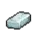 Iron Bar |
| Le Brain Tools (보라 #7) | 도끼의 스킬 파워 증가 | 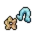 Sentient Cereal |
| Hocus Choppus (보라 #3) | 최대 MP에 비례한 Chopping 효율 증가 | 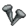 Trusty Nails |
| Mage Is Best (보라 #2) | 보라 패시브 버블의 효과 증폭 | 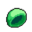 Spore Cap |
| Stable Jenius (보라 #1) | 총 WIS 증가 | 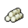 Bleach Logs |
노란색 버블 5번 Prowesessary도 전반적인 스킬 효과를 높여주며, Tundra Logs 바이알은 Chopping 효율을 제공합니다.
Chopping 빌드 추가 최적화
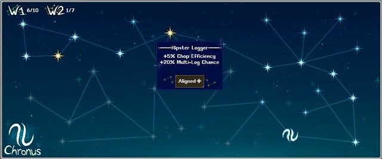
위의 핵심 빌드 외에도, 아래 요소들이 소폭이지만 추가적인 효율 향상에 기여합니다.
Chopping Star Signs
현재 진행도에 따라 아래 우선순위로 Star Signs을 장착하세요.
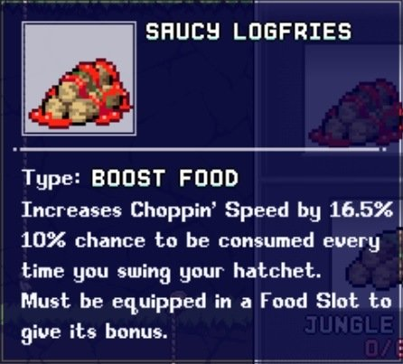
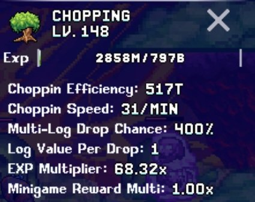
- Hipster Logger (Chopping 효율 +5%, 다중 로그 확률 +20%)
- The Big Comatose (스킬 AFK 획득량 +2%)
- The OG Killer (휴대 용량 +5%, 스킬 AFK 획득량 +1%, 모든 스킬 Prowess +2%)
Chopping 음식
Chopping 속도는 최대 62/MIN으로 캡이 있으므로, 두 가지 속도 음식이 모두 필요하지 않을 수 있습니다. 캐릭터 스킬 화면에서 현재 속도를 확인하세요.
| 음식 | 효과 | 출처 |
|---|---|---|
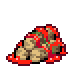 Saucy Logfries | Chopping 속도 15% 증가 | 모루 |
| Chogg Nogg | Chopping 속도 25% 증가 | 이벤트 |
Chopping 조각상
| 조각상 | 효과 | 출처 |
|---|---|---|
| Lumberbob Statue | Chopping 파워 증가 | 크리스탈 몬스터 및 광석 맥 |
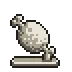 Feasty Statue | 음식 보너스 증가 | 크리스탈 몬스터 |
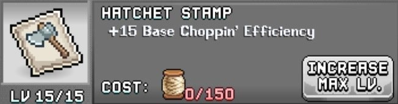
Chopping 우표
| 우표 (탭) | 효과 | 출처 | 필요 재료 |
|---|---|---|---|
 Hatchet (스킬) Hatchet (스킬) | Chopping 효율 | Mr Pigibank |  Thread Thread |
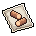 Duplogs (스킬) | 다중 로그 확률 | Frost Flake (W3 몹) | Militia Helm |
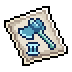 Swag Swingy Tool (스킬) | Chopping 효율 | Thermister (W3 몹) | 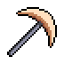 Copper Pickaxe |
 Potion Stamp (기타) Potion Stamp (기타) | 음식 효과 | Papua Piggea 퀘스트 | Icing Ironbite |

Chopping 빌드 Post Office
초반에는 Post Office 박스 투자를 Chopping 전담 캐릭터에게만 집중하세요.
| 박스 | 효과 |
|---|---|
 Taped Up Timber Taped Up Timber | Chopping 효율 %, Prowess 효과 %, Chopping AFK 획득량 % |
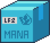 Magician Starter Pack | 기본 최대 MP +, 최대 MP % |
 Carepack From Mum Carepack From Mum | 부스트 음식 효과 % |
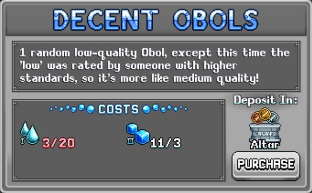
Chopping 빌드 Obols
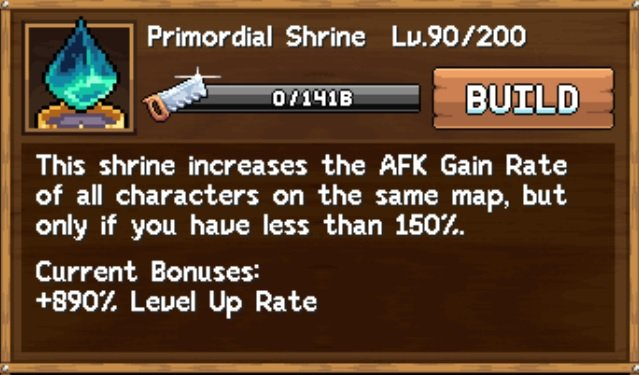
Obols는 개인 및 가족 페이지 모두에 배치해 최대 효과를 누릴 수 있습니다. Chopping Obols는 연금술 액체 상점에서만 구매 가능하여 시간이 걸립니다. 그전까지는 보유한 WIS Obols를 활용하세요.
Chopping 빌드 신전
| 신전 | 효과 |
|---|---|
| Primordial Shrine | AFK 획득량 증가 |
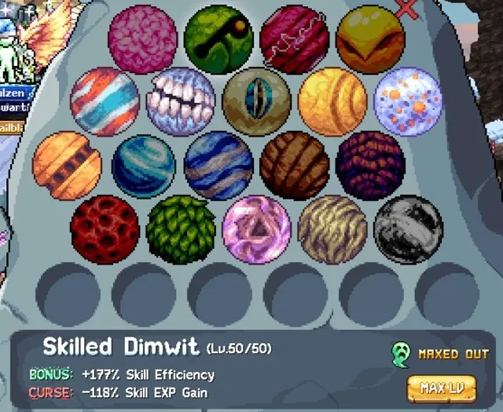
Chopping 빌드 기도
| 기도 | 효과 | 출처 |
|---|---|---|
 Skilled Dimwit Skilled Dimwit | 스킬 효율 증가, 스킬 경험치 획득량 감소 | Goblin Gorefest 웨이브 25 |
| Zerg Rushogen | AFK 획득률 증가, 휴대 용량 감소 | Goblin Gorefest 웨이브 121 |